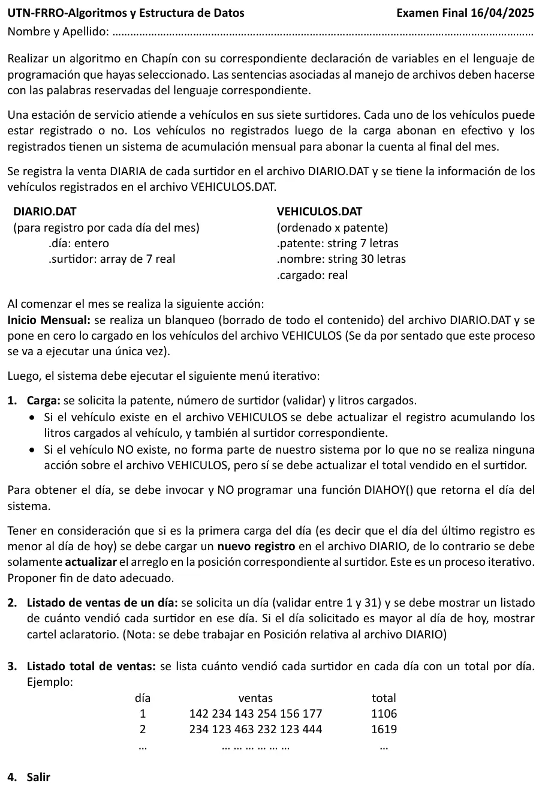

Final, 16/04/2025 (Estación de Servicio)
3° parcial y final, 16/04/2025
Enunciado


Propuesta de respuesta
Respuesta no verificada. La propuso Luta Studios con inteligencia artificial y ningún docente la revisó. Puede tener errores.
La hoja pide el diagrama de Chapin. Va un diagrama por módulo, con su declaración de variables arriba, y primero el del programa principal. Si un diagrama no entra en la pantalla, tocalo para verlo completo. Después de los diagramas está el mismo algoritmo en Python, para que lo puedas probar. Las sentencias de archivos van con las palabras reservadas de Python (open, pickle.load, pickle.dump, seek, tell). Los textos se completan con ljust para que los registros midan lo mismo. El tamaño de un registro sale de tell() después de leer el primero.
Programa principal y menú
Inicio mensual
1. Carga
2. Listado de ventas de un día, por posición relativa
3. Listado total de ventas
El mismo algoritmo en Python
Es el programa que se probó, con las mismas sentencias y en el mismo orden que las cajas. Cada Leer del diagrama es un input, convertido a int o float según la declaración, y cada Mostrar es un print.
import os
import pickle
class Diario:
def __init__(self):
self.dia = 0
self.surtidor = [0.0]*7
class Vehiculo:
def __init__(self):
self.patente = ""
self.nombre = ""
self.cargado = 0.0
# afDiario, afVehiculos: str
# alDiario, alVehiculos: archivo
# tamVeh: int
afDiario = "DIARIO.DAT"
afVehiculos = "VEHICULOS.DAT"
def INICIO_MENSUAL():
# tam, pos: int
# veh: Vehiculo
global alDiario, alVehiculos, tamVeh
alDiario = open(afDiario, "w+b")
alVehiculos = open(afVehiculos, "r+b")
tam = os.path.getsize(afVehiculos)
alVehiculos.seek(0, 0)
pickle.load(alVehiculos)
tamVeh = alVehiculos.tell()
alVehiculos.seek(0, 0)
while alVehiculos.tell() < tam:
pos = alVehiculos.tell()
veh = pickle.load(alVehiculos)
veh.cargado = 0.0
alVehiculos.seek(pos, 0)
pickle.dump(veh, alVehiculos)
alVehiculos.flush()
def BUSCA_VEHICULO(pat):
# Dicotómica: VEHICULOS.DAT está ordenado por patente
# pat: str
# inicio, fin, medio, pos: int
# veh: Vehiculo
inicio = 0
fin = os.path.getsize(afVehiculos) // tamVeh - 1
pos = -1
while inicio <= fin and pos == -1:
medio = (inicio + fin) // 2
alVehiculos.seek(medio * tamVeh, 0)
veh = pickle.load(alVehiculos)
if veh.patente == pat:
pos = medio
elif pat < veh.patente:
fin = medio - 1
else:
inicio = medio + 1
return pos
def SUMAR_SURTIDOR(s, litros):
# s: int
# litros: float
# hoy, tam, tamReg, d: int
# reg: Diario
hoy = DIAHOY()
tam = os.path.getsize(afDiario)
if tam > 0:
alDiario.seek(0, 0)
pickle.load(alDiario)
tamReg = alDiario.tell()
alDiario.seek(tam - tamReg, 0)
reg = pickle.load(alDiario)
d = reg.dia
else:
d = 0
if d == hoy:
reg.surtidor[s - 1] = reg.surtidor[s - 1] + litros
alDiario.seek(tam - tamReg, 0)
pickle.dump(reg, alDiario)
else:
alDiario.seek(0, 2)
while d < hoy:
d = d + 1
reg = Diario()
reg.dia = d
if d == hoy:
reg.surtidor[s - 1] = litros
pickle.dump(reg, alDiario)
alDiario.flush()
def CARGA():
# pat: str
# s, pos: int
# litros: float
# veh: Vehiculo
# Fin de datos: patente "*"
pat = input("Patente (* para terminar): ")
while pat != "*":
pat = pat.ljust(7, " ")
s = int(input("Surtidor (1 a 7): "))
while s < 1 or s > 7:
s = int(input("Surtidor inválido: "))
litros = float(input("Litros cargados: "))
while litros <= 0:
litros = float(input("Tiene que ser mayor que 0: "))
pos = BUSCA_VEHICULO(pat)
if pos != -1:
alVehiculos.seek(pos * tamVeh, 0)
veh = pickle.load(alVehiculos)
veh.cargado = veh.cargado + litros
alVehiculos.seek(pos * tamVeh, 0)
pickle.dump(veh, alVehiculos)
alVehiculos.flush()
SUMAR_SURTIDOR(s, litros)
pat = input("Patente (* para terminar): ")
def VENTAS_DE_UN_DIA():
# dia, tam, tamReg, s: int
# reg: Diario
dia = int(input("Día (1 a 31): "))
while dia < 1 or dia > 31:
dia = int(input("Día inválido: "))
tam = os.path.getsize(afDiario)
if dia > DIAHOY():
print("Ese día todavía no llegó")
elif tam == 0:
print("No hay ventas registradas")
else:
alDiario.seek(0, 0)
pickle.load(alDiario)
tamReg = alDiario.tell()
if dia * tamReg > tam:
print("No hay ventas registradas ese día")
else:
alDiario.seek((dia - 1) * tamReg, 0)
reg = pickle.load(alDiario)
for s in range(7):
print("Surtidor", s + 1, ":", reg.surtidor[s])
def VENTAS_TOTALES():
# tam, s: int
# total: float
# reg: Diario
tam = os.path.getsize(afDiario)
print("día / ventas / total")
alDiario.seek(0, 0)
while alDiario.tell() < tam:
reg = pickle.load(alDiario)
total = 0
print(reg.dia, end=" ")
for s in range(7):
print(reg.surtidor[s], end=" ")
total = total + reg.surtidor[s]
print(total)
# Programa principal
# opcion: int
INICIO_MENSUAL()
opcion = 0
while opcion != 4:
print("1. Carga")
print("2. Listado de ventas de un día")
print("3. Listado total de ventas")
print("4. Salir")
opcion = int(input("Opción: "))
while opcion < 1 or opcion > 4:
opcion = int(input("Opción inválida: "))
match opcion:
case 1:
CARGA()
case 2:
VENTAS_DE_UN_DIA()
case 3:
VENTAS_TOTALES()
alDiario.close()
alVehiculos.close()Respuesta no verificada. Puede tener errores.
Se armó con la hoja del examen y la página del 3° parcial y final (registros como clase, recorrer, búsquedas, actualizar un registro y alta). Las operaciones de archivos siguen las diapositivas de merge y corte de control. El Chapin sigue la forma de las diapositivas del examen de Historia Clínica de 2019. La posición relativa sigue la sección «Búsqueda en archivos».
Quedó en duda: Si un día no hubo ventas, el archivo tendría un hueco y el día no coincidiría con su posición. Acá se agregan registros en cero por los días sin ventas, así el día N está en la posición N - 1. La hoja no lo pide. El inicio mensual se llama al arrancar el programa, porque la hoja da por sentado que se ejecuta una única vez. El blanqueo de DIARIO.DAT usa w+b, que borra el contenido. Los modos de open (rb, r+b, w+b) salen de la tabla de dos resúmenes de alumnos, que ningún apunte de la cátedra trae. La patente se completa a 7 caracteres, el largo que da la hoja. El fin de datos es la patente *. DIAHOY() devuelve el día del mes como entero, y no se programa. Las diapositivas de la materia no muestran en Chapin la lectura de datos ni la selección múltiple. Acá van como Leer y como Según, con una columna por caso.
¿Cómo te fue?
Marcá cada tema del examen.
- ArchivosSecuencial y de acceso directo, en 3° parcial y final
- Posición relativaCómo viene el examen, en 3° parcial y final
- RegistrosRegistros, en 3° parcial y final